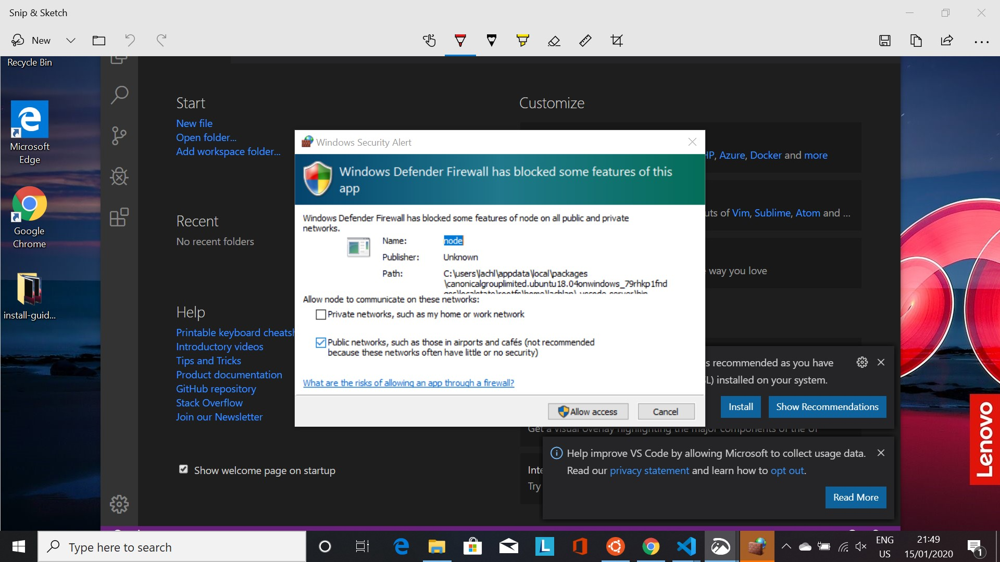

Motivation
A good text editor lies at the heart of any serious programmer's toolkit: It can do almost anything and makes you much more productive. The editors built into a specific program are generally are not a satisfying option (we will find certain cases where you may want to use them).
There is a slight learning curve, but soon you hopefully be wondering why no-one forced you to do this before! We should get you past the steepest part of the learning curve during the course itself, so we don't anticipate you struggling on your own.
Note
None of the skills we learn in the course are tied to VS Code, so if you do decide to move away to another editor, nothing will be lost.
VS Code
VS Code is a relatively new text editor that works across all three platforms: Linux, Windows and Mac. In a short time it has already become one of most used text editors and we hope you will soon see why. It is built by Microsoft, but is open source, i.e. everyone can see and modify the program's internal code - so it is less nasty on the consciousness than some of Microsoft's traditional products. The main advantages for us are that it includes support for debugging, embedded Git control and GitHub, syntax highlighting, intelligent code completion, and many useful plugins - all of which make our lives much easier.
Department Managed Laptops
If your laptop is managed by the department, VS Code is most likely already installed on your device. If not, search for "Software Center" and install VS Code.
Installing VS Code on Mac
VS Code can be installed using homebrew. Type the following into your terminal and hit return:
brew install --cask visual-studio-code
Once it has been installed, verify your install by following the instructions below.
Installing VS Code on Ubuntu
VS Code is available to install via snap. Enter the following in your terminal and press Return:
snap install code --classic
Once it has been installed, verify your install by following the instructions below.
Installing VS Code on Windows
We are installing VS Code via winget by entering the following command in the terminal and hitting Return:
winget install -e --id Microsoft.VisualStudioCode --interactive
- Accept any default options.
- At the end of the install, launch VS Code (it gives you this option on the last window).
Windows Defender Firewall
You will likely get the following pop-up during the above process:

Click 'Allow access' if you do.
Verifying Your Install
After you have installed software via the terminal, we often want to verify the install was successful.
For most programs we do this by typing the program name followed by --version in to the terminal.
Let's do it:
code --version
which should yield output like:
1.59.0
379476f0e13988d90fab105c5c19e7abc8b1dea8
x64
if successful.
Installing Extensions for VS Code
VS Code is great straight of the box, but gets even better when we add some additional extensions to make our life easier. To add extensions:
- Open VS Code
- Press
Ctrl + Shift + Xto open the Extensions side bar (it opens on the left). - Add extensions by:
- Searching for them in the Marketplace
- When you find them, click
Install
We recommend (but don't require) the following extensions to be added for this course:
- Bracket Pair Colorizer 2
- Code Spell Checker
- Git History
- GitLens
- Markdown All in One
- Markdown Preview Enhanced
- Project Manager
- Python
- R
- vscode-icons
- vscode-pdf
- Whitespacer